シンボル
| データ | ||
|---|---|---|
| 区間の最小値 | minv | |
 | 指定区間の最小値として返される値（※表示用のため配列にする必要はありません） | res |
| 質問に対する処理 | ||
|---|---|---|
 | 区間最小値を更新します。 | minv[k] ← ? |
 | 指定区間の最小値を決定します。 | res ← ? |
 | 更新クエリにより更新済みの区間 | kの軌跡 |
 | 探索区間とクエリ区間がが交わらない区間 | if r ≤ a or b ≤ l: |
 | 探索区間がクエリ区間に完全に含まれる区間 | else if a ≤ l and r ≤ b: |
 | 探索区間がクエリ区間とクエリ区間外を含む区間 | else: |
アニメーション
質問に対する処理
